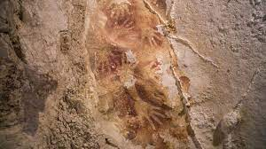

A jávai előember, a Homo erectus megkövesedett maradványai mutatják, hogy az indonéz szigetvilág már sok százezer éve lakott volt. A mai lakosság alapját adó ausztronéz népek Délkelet-Ázsiába Tajvan felől vándoroltak be i.e. 2000 körül, a melanéz népességet keletre szorítva. A táj ideálisnak bizonyult öntözéses rizstermelésre, így a rizs termelése az i.e. 8. században megkezdődött. Az i. sz. I. évszázadra falvak, kisvárosok, kisebb királyságok virágoztak fel. Indonézia fekvése a tengeri utak mentén stratégiai jelentőségű, amely elősegítette a szigetek közti és a távolsági kereskedelmet. Évszázadokkal időszámításunk kezdete előtt már kereskedelmi utak vezettek Indiába és Kínába. A kereskedelemnek alapvető szerepe volt az indonéz történelem minden korszaykában.

A kereskedelem miatt virágzott fel a 7. században a hatalmas Srivijaya tengeri királyság is. Életében fontos szerepet játszott a hinduizmus és a buddhizmus. A 8-10. század között a földművelésből élő buddhista Sailendra és hindu Mataram dinasztiák vetélkedtek Jáva belsejének birtokáért. A vallási építészet nagyszabású emlékeit hagyták maguk után, ilyen a Sailendra államban Borobudur és Mataram államban Prambanan. Kelet-Jáván a 13. század vége felé alapították meg a hindu Majapahit királyságot, amikor egy rövid háborúban legyőzték az északról érkezett mongolokat. A királyság befolyása csaknem az egész mai Indonéziára kiterjedt Gajah Mada uralkodása alatt, amit az indonéz történelem aranykorának tekintenek.
Bár muszlim kereskedők Délkelet-Ázsiában már Mohamed fellépését követően is jártak, az első bizonyítékok helybeli muszlim lakosságra a 13. századból, Észak-Szumátrából erednek. Más vidékeken fokozatosan terjedt el az iszlám vallás, Jáván és Szumátrán a 16. század végére lett domináns. A legtöbb vidéken az iszlám vallás keveredett korábbi kulturális és vallási képzetekkel, amely sajátos színezetet ad Indonézia, de különösen Jáva muszlim vallásgyakorlatának.
Amikor a portugálok a 16. század elején ideérkeztek, számtalan tagolt államot találtak. Ezek az államok majdhogynem védtelenek voltak a portugálokkal és később más európaiakkal szemben is, akik a fűszer-kereskedelmet kívánták kisajátítani.
A 17. században a hollandok váltak a legerősebb európai hajós nemzetté, és az indonéz szigetvilágból kiszorították a spanyolokat és a portugálokat (kivéve a Timor szigetén elhelyezkedő Portugál Timor gyarmatukat, ma Kelet-Timor). A Holland Kelet-indiai Társaság kereskedelmi tevékenységének beindulásával megalapozódott Hollandia befolyása Indonéziában. Ez a magánvállalkozás jellegű állam saját flottával és hadsereggel rendelkezett, így fokozatosan kiterjeszthette befolyását a politikai életre is. A britekhez hasonlóan a hollandok is helyi vazallusok segítségével, közvetett módon gyakorolták a hatalmat. Azután, hogy a Batáviai Köztársaság (Napóleon holland bábállama) 1799-ben feloszlatta a Kelet-indiai Társaságot, a napóleoni háborúkat követően Kelet-India 1815-ben a Hollandiai Egyesült Királyság gyarmata lett. A holland korona legfontosabb gyarmata volt.
A 19. században, az agrártermelési rendszer (Cultuurstelsel) bevezetésével Jáván hatalmas ültetvények művelésére kényszerítették a helyi parasztokat, ami végre meghozta Hollandia számára azt az extra profitot, amit a Holland Kelet-indiai Társaság nem volt képes biztosítani. Az 1870 után következő, liberálisabb gyarmati uralkodás során ezt a termelési rendszert eltörölték, majd 1901-ben a hollandok bevezették az ún. Etikus Politikát, amely korlátozott politikai reformokat tartalmazott. Jelentősen megnőttek gyarmati befektetések.
A második világháborúban, miközben Hollandia német katonai megszállás alatt állt, 1941 decemberében Japán öt oldalról támadást indított Jáva szigete és Holland Kelet-India létfontosságú ellátási vonalai ellen. Bár Japán 1942 márciusában elfoglalta Jáva szigetét, képtelen volt olyan hazai vezetőt találni, aki kész lett volna együttműködni velük a hollandok ellen. A japán megszálló parancsnok végül elrendelte Sukarno szabadon bocsátását, így az börtönszigetét elhagyva, 1942 júliusában Jakartába érkezett. Sukarno és társai együttműködtek a japán megszállókkal. 1945-ben, a háború vége felé, Sukarno felismerte, hogy kiváló lehetősége nyílt az ország függetlenségének kikiáltására. Japán egyetértésével megalakította a függetlenséget előkészítő bizottságot, majd 1945. augusztus 17-én, Mohammad Hatta társaságában kikiáltotta Indonézia függetlenségét.
A szövetségesek természetesen megpróbálták visszaállítani hatalmukat az elvesztett területeik fölött, így a Holland Királyi Hadsereggel együtt csapatokat küldtek az ország elfoglalására. Indonézia függetlenségi háborúja 1945-től egészen 1949. december 27-éig tartott, amikor engedve a nemzetközi nyomásnak, Hollandia elismerte Indonézia függetlenségét. Sukarno lett az ország első elnöke, Mohammad Hatta pedig az első alelnök. Hollandia csak 2005. augusztus 16-án ismerte el az 1945-öt, mint Indonézia valódi függetlensége évét, és kért bocsánatot a Holland Királyi Hadsereg által okozott veszteségekért, halálesetekért.
Az 1950-es és 1960-as évek folyamán Sukarno kormánya először a kialakulóban lévő el nem kötelezett mozgalommal alakított ki szoros kapcsolatokat és a szocialista blokk országaival működött együtt egyre szorosabb kapcsolatban. Szintén az 1960-as években Indonézia katonai konfliktusba keveredett a szomszédos Malajziával, valamint egyre növekedett a feszültség a hazai gazdasági nehézségek miatt is.
Suharto hadseregtábornok 1967-ben ragadta magához az elnöki hatalmat, az általa vezetett katonai puccs ürügye a gyengülő Sukarno elnök ellen szőtt kommunista összeesküvés leverése volt. Suharto katonai uralma során több százezer embert végeztek ki vagy börtönöztek be az állítólagos kommunisták elleni hajtóvadászat során. Suharto kormányzásához fűzik az Új Rend kialakítását az országban. Ekkoriban nagy volumenű külföldi tőkebefektetés történt, jelentős gazdasági fellendülést eredményezve. E folyamat és az idők során Suharto és családja szövevényes korrupciós hálózat kialakításával rendkívüli gazdagságra tett szert. Végül az időközben hanyatló gazdaság hatására kirobbanó 1998-as Indonéz Forradalom tömegei lemondásra kényszerítették.
Az 1998-tól 2001-ig terjedő időszakban az országnak három elnöke volt: Bacharuddin Jusuf (BJ) Habibie, Abdurrahman Wahid és Megawati Sukarnoputri, Sukarno első elnök leánya. 2004-ben lebonyolították a világ legnagyobb egynapos, közvetlen elnökválasztását és a győztes Susilo Bambang Yudhoyono lett, akit 2009-ben újraválasztottak.
2004 decemberében Szumátra partjait hatalmas cunami érte.